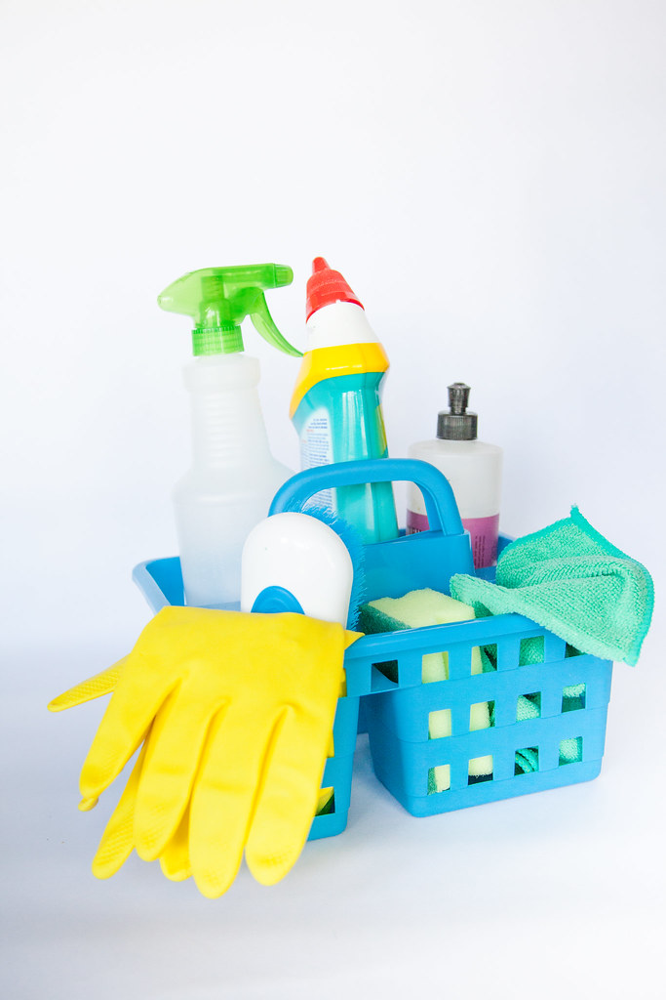

Los riesgos de los productos de limpieza, en un solo lugar
Para quienes hacen las tareas de casa todos los días: aquí puedes ver qué producto puede afectarte, a quién le hace más daño y cómo usarlo sin peligro.
1Busca el producto
2Lee a quién le afecta
3Sigue los consejos

Consulta de productos
Busca el producto por su nombre o elige una actividad (baños, cocina, pisos…).
Verificador de mezclas
¿Tienes dos productos a la vez? Toca los que piensas combinar y te avisamos si hay riesgo.